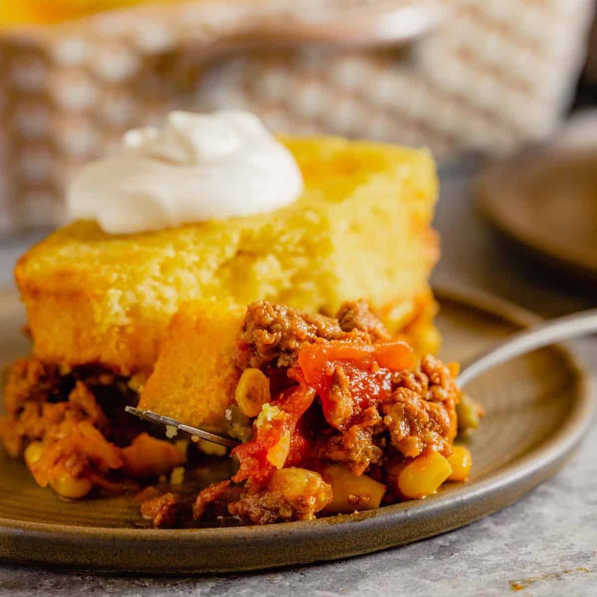

Tamale Pie

Delicious Tamale Pie
This recipe will delight with it's simplicity and flavor.
Ingredients
- 1 tablespoon unsalted butter, at room temperature
- 1 tablespoon olive oil
- 1 pound of lean ground turkey
- 1 medium yellow onion, chopped
- 1 green bell pepper, diced
- 2 garlic cloves, finely minced
- 2 teaspoons ground cumin
- 1 15-ounce can of pinto beans, drained and rinsed
- 1 8-ounce can of diced tomatoes
- 2 chipotle chiles, plus 1 teaspoon adobo sauce from the can of chipotles in adobo
- 1 cup of grated cheddar cheese
- 1/2 cup chopped fresh cilantro leaves
- 1 8.5-ounce package cornbread mix
- 1 egg
- 1/3 cup milk
Steps
- Preheat oven to 400 degrees F.
- Grease an 8-inch baking dish with the butter and set it aside.
- Heat the olive oil in a nonstick skillet over medium heat. Add the ground turkey, the onions, green peppers, and garlic and cook until the turkey is no longer pink and is cooked through, about 8 minutes. Drain off any excess fat and sprinkle the meat mixture with the cumin.
- Add the beans, tomatoes, chiles and adobo sauce to the skillet and bring to a boil over high heat. Reduce the heat to medium and simmer until heated through and slightly thickened, about 5 minutes. Remove pan from the heat and stir in the cheese and cilantro.
- Spread the turkey mixture in the prepared baking dish, pressing down on it with the back of a spoon to make an even, compact layer.
- Combine the cornbread mix with milk and egg. Spread the cornbread batter over the turkey mixture and bake until the cornbread is golden-brown, 20 to 25 minutes. Let the tamale pie stand for 5 minutes before cutting into squares and serving.